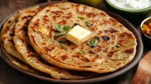

Paratha is a popular Indian flatbread, often stuffed with potatoes, paneer, or vegetables.
Making parathas taught me the importance of dough texture. Soft dough makes soft parathas.
They are best served hot with butter, curd, or pickle.

Preparation Time: 30 minutes
Difficulty: Easy
Servings: 3
Category: Vegetarian